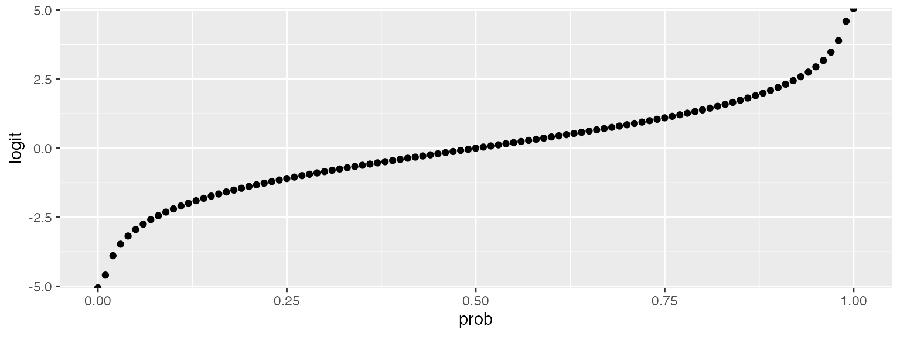

appendix3b_extended_binomial.RmdDownload the .Rmd for this example
To give an overview of the simulation task, we will simulate data from a design with crossed random factors of subjects and stimuli, fit a model to the simulated data, and then try to recover the parameter values we put in from the output. In this hypothetical study, subjects classify the emotional expressions of faces as quickly as possible, and we use accuracy (correct/incorrect) as the primary dependent variable. The faces are of two types: either from the subject’s ingroup or from an outgroup. For simplicity, we further assume that each face appears only once in the stimulus set. The key question is whether there is any difference in classification accuracy across the type of face.
The important parts of the design are:
# load required packages library("lme4") # model specification / estimation library("afex") # anova and deriving p-values from lmer library("broom.mixed") # extracting data from model fits library("faux") # data simulation library("tidyverse") # data wrangling and visualisation # ensure this script returns the same results on each run set.seed(8675309) faux_options(verbose = FALSE)
This example presents an extended simulation for a binomial logistic mixed regression. Part of the process involves conversion between probability and the logit function of probability. The code below converts between these.
logit <- function(x) { log(x / (1 - x)) } inv_logit <- function(x) { 1 / (1 + exp(-x)) } data.frame( prob = seq(0,1,.01) ) %>% mutate(logit = logit(prob)) %>% ggplot(aes(prob, logit)) + geom_point()

In this example, 100 subjects will respond twice (for happy and angry expressions) to 50 items; 25 items in each of 2 categories. In this example, expression is a within-subject and within-item factor and category is a within-subject and between-item factor.
We use the following prefixes to designate model parameters and sampled values: * beta_*: fixed effect parameters * subj_*: random effect parameters associated with subjects * item_*: random effect parameters associated with items * X_*: effect-coded predictor * S_*: sampled values for subject random effects * I_*: sampled values for item random effects
In previous tutorials, we used numbers to designate fixed effects, but here we will use letter abbreviations to make things clearer:
*_0: intercept*_e: expression*_c: category*_ec: expression * categoryOther terms:
*_rho: correlations; a vector of the upper right triangle for the correlation matrix for that group’s random effectsn_*: sample sizeext_bin_data <- function( n_subj = 100, # number of subjects n_ingroup = 25, # number of faces in ingroup n_outgroup = 25, # number of faces in outgroup beta_0 = 0, # grand mean beta_e = 0, # main effect of expression beta_c = 0, # main effect of category beta_ec = 0, # interaction between category and expression item_0 = 1, # by-item random intercept sd item_e = 1, # by-item random slope for exp item_rho = 0, # by-item random effect correlation subj_0 = 1, # by-subject random intercept sd subj_e = 1, # by-subject random slope sd for exp subj_c = 1, # by-subject random slope sd for category subj_ec = 1, # by-subject random slope sd for category*exp # by-subject random effect correlations subj_rho = c(0, 0, 0, # subj_0 * subj_e, subj_c, subj_ec 0, 0, # subj_e * subj_c, subj_ec 0) # subj_c * subj_ec ) { # simulate items items <- faux::rnorm_multi( n = n_ingroup + n_outgroup, mu = 0, sd = c(item_0, item_e), r = item_rho, varnames = c("I_0", "I_e") ) %>% mutate(item_id = faux::make_id(nrow(.), "I"), category = rep(c("ingroup", "outgroup"), c(n_ingroup, n_outgroup))) # simulate subjects subjects <- faux::rnorm_multi( n = n_subj, mu = 0, sd = c(subj_0, subj_e, subj_c, subj_ec), r = subj_rho, varnames = c("S_0", "S_e", "S_c", "S_ec") ) %>% mutate(subj_id = faux::make_id(nrow(.), "S")) # simulate trials # simulate trials crossing(subjects, items, expression = factor(c("happy", "angry"), ordered = TRUE) ) %>% mutate( # effect code the two fixed factors X_e = recode(expression, "happy" = -0.5, "angry" = 0.5), X_c = recode(category, "ingroup" = -0.5, "outgroup" = +0.5), # add together fixed and random effects for each effect B_0 = beta_0 + S_0 + I_0, B_e = beta_e + S_e + I_e, B_c = beta_c + S_c, B_ec = beta_ec + S_ec, # calculate gaussian effect Y = B_0 + (B_e*X_e) + (B_c*X_c) + (B_ec*X_e*X_c), pr = inv_logit(Y), # transform to probability of getting 1 Y_bin = rbinom(nrow(.), 1, pr) # sample from bernoulli distribution ) %>% select(subj_id, item_id, expression, category, X_e, X_c, Y, Y_bin) }
dat_sim <- ext_bin_data() head(dat_sim)
## # A tibble: 6 x 8
## subj_id item_id expression category X_e X_c Y Y_bin
## <chr> <chr> <ord> <chr> <dbl> <dbl> <dbl> <int>
## 1 S100 I50 angry outgroup 0.5 0.5 -4.90 0
## 2 S100 I50 happy outgroup -0.5 0.5 -4.62 0
## 3 S100 I29 angry outgroup 0.5 0.5 -4.65 0
## 4 S100 I29 happy outgroup -0.5 0.5 -4.15 0
## 5 S100 I11 angry ingroup 0.5 -0.5 -5.85 0
## 6 S100 I11 happy ingroup -0.5 -0.5 -2.50 0single_run2 <- function(filename = NULL, ...) { dat_sim <- ext_bin_data(...) mod_sim <- glmer(Y_bin ~ 1 + X_e*X_c + (1 + X_e | item_id) + (1 + X_e*X_c | subj_id), data = dat_sim, family = "binomial") sim_results <- broom.mixed::tidy(mod_sim) # append the results to a file if filename is set if (!is.null(filename)) { append <- file.exists(filename) # append if the file exists write_csv(sim_results, filename, append = append) } # return the tidy table sim_results }
The following function calculate the betas from probabilities for each cell. You will need to figure out a custom function for each design to do this, or estimate fixed effect parameters from analysis of pilot data.
prob2param <- function(angry_ingroup = 0, angry_outgroup = 0, happy_ingroup = 0, happy_outgroup = 0) { ai <- logit(angry_ingroup) ao <- logit(angry_outgroup) hi <- logit(happy_ingroup) ho <- logit(happy_outgroup) list( beta_0 = mean(c(ai,ao,hi,ho)), # grand mean beta_e = (ao+ai) - (ho+hi), # angry - happy beta_c = (ao+ho) - (ai+hi), # outgroup - ingroup beta_ec = (ao-ai) - (ho-hi) # angry o-i diff - happy o-i diff ) }
# run simulations and save to a file on each rep filename <- "sims/binomial_ext.csv" b = prob2param(.5, .6, .4, .5) reps <- 10 if (!file.exists(filename)) { # run simulations and save to a file sims <- purrr::map_df(1:reps, ~single_run2( filename = filename, beta_0 = b$beta_0, beta_e = b$beta_e, beta_c = b$beta_c, beta_ec = b$beta_ec) ) } # read saved simulation data sims <- read_csv(filename)
est <- sims %>% filter(effect == "fixed") %>% group_by(term) %>% summarise( mean_estimate = mean(estimate), .groups = "drop" ) est %>% mutate( parameter = c("beta_0", "beta_c", "beta_e", "beta_ec"), value = c(b$beta_0, b$beta_c, b$beta_e, b$beta_ec) ) %>% mutate_if(is.numeric, round, 2)
## # A tibble: 4 x 4
## term mean_estimate parameter value
## <chr> <dbl> <chr> <dbl>
## 1 (Intercept) 0.05 beta_0 0
## 2 X_c 0.88 beta_c 0.81
## 3 X_e 0.74 beta_e 0.81
## 4 X_e:X_c -0.1 beta_ec 0Sum estimates for each cell and use inverse logit transform to recover probabilities.
int <- est[[1,2]] cat <- est[[2,2]] exp <- est[[3,2]] cat_exp <- est[[4,2]] data.frame( angry_outgroup = inv_logit(int + .5*cat + .5*exp + .5*.5*cat_exp), angry_ingroup = inv_logit(int - .5*cat + .5*exp - .5*.5*cat_exp), happy_outgroup = inv_logit(int + .5*cat - .5*exp - .5*.5*cat_exp), happy_ingroup = inv_logit(int - .5*cat - .5*exp + .5*.5*cat_exp) ) %>% gather(key, val, 1:4) %>% separate(key, c("exp", "cat")) %>% spread(cat, val) %>% mutate_if(is.numeric, round, 2)
## exp ingroup outgroup
## 1 angry 0.50 0.70
## 2 happy 0.31 0.54